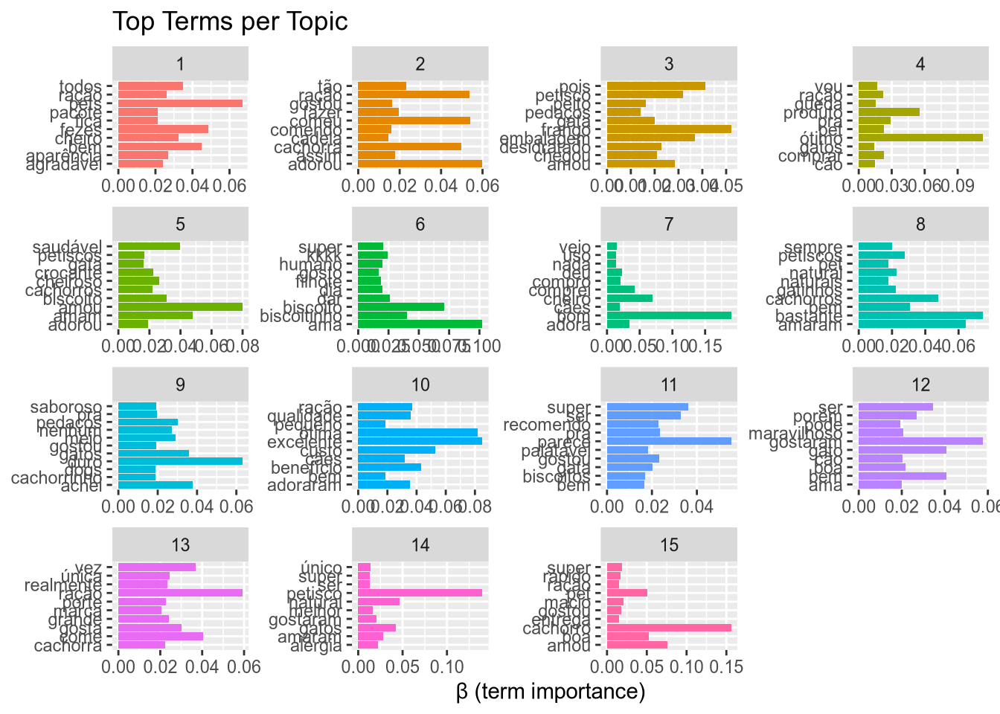
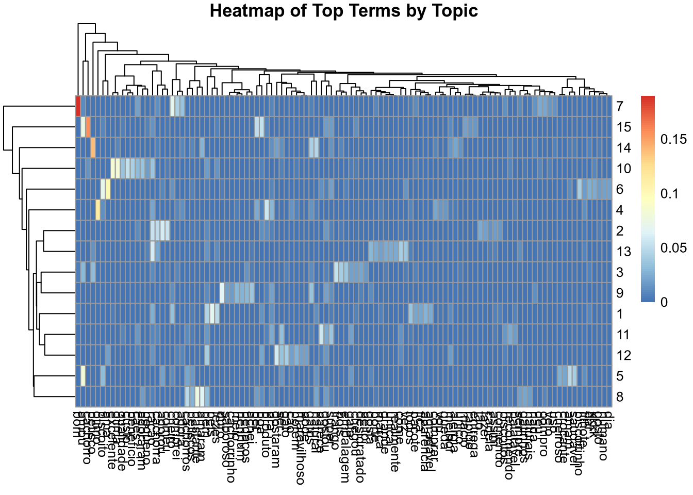
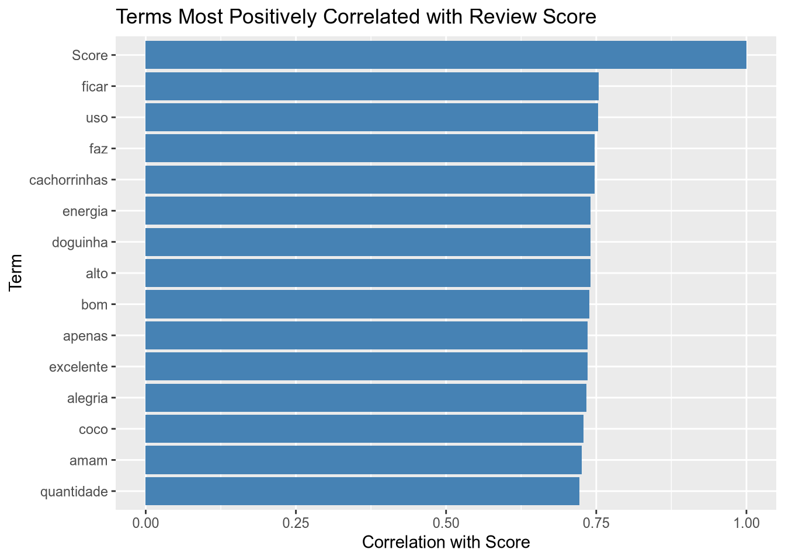
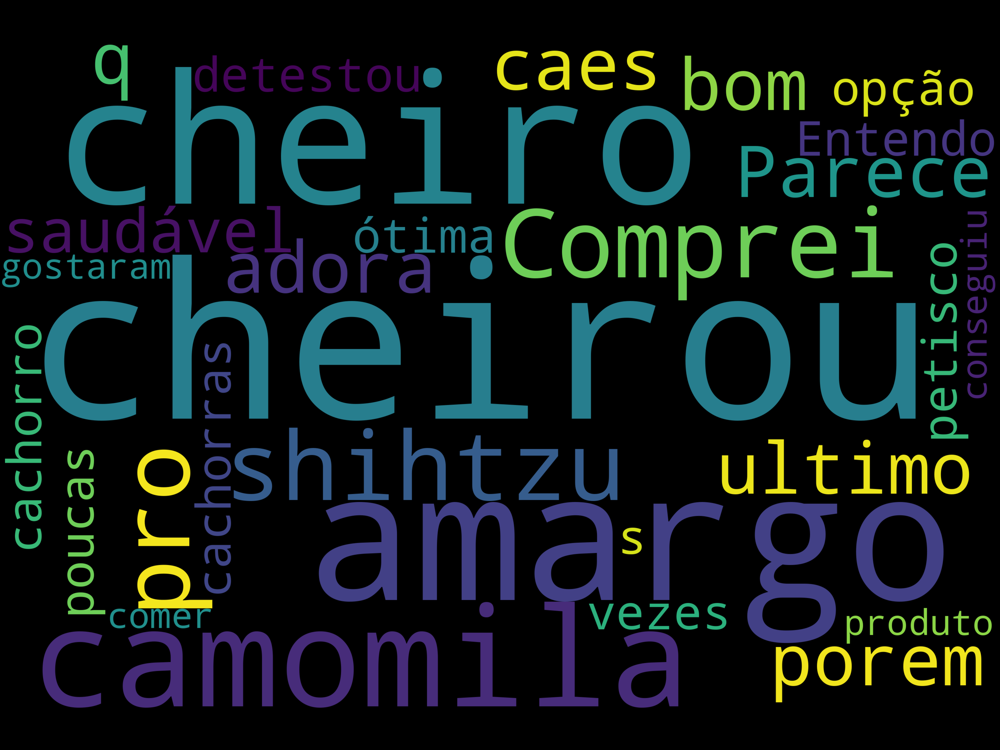
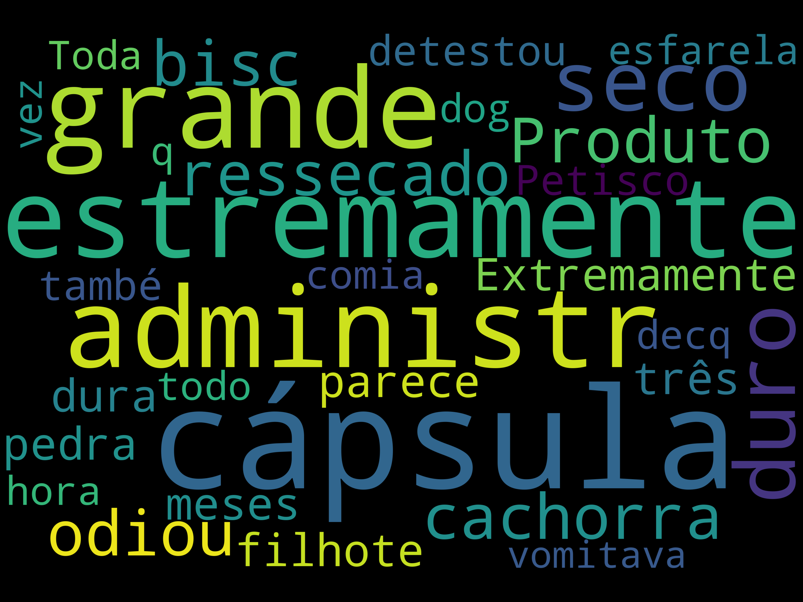
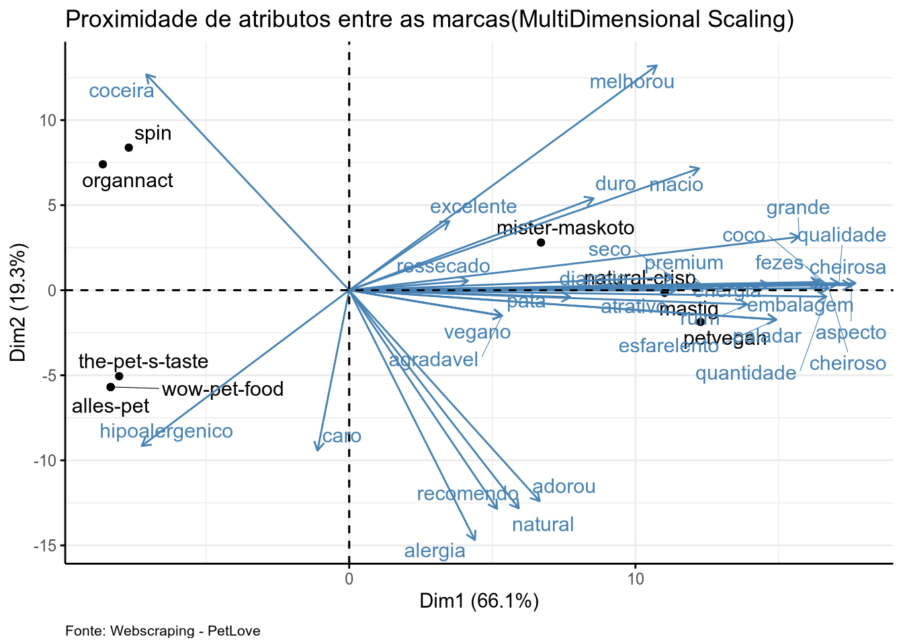
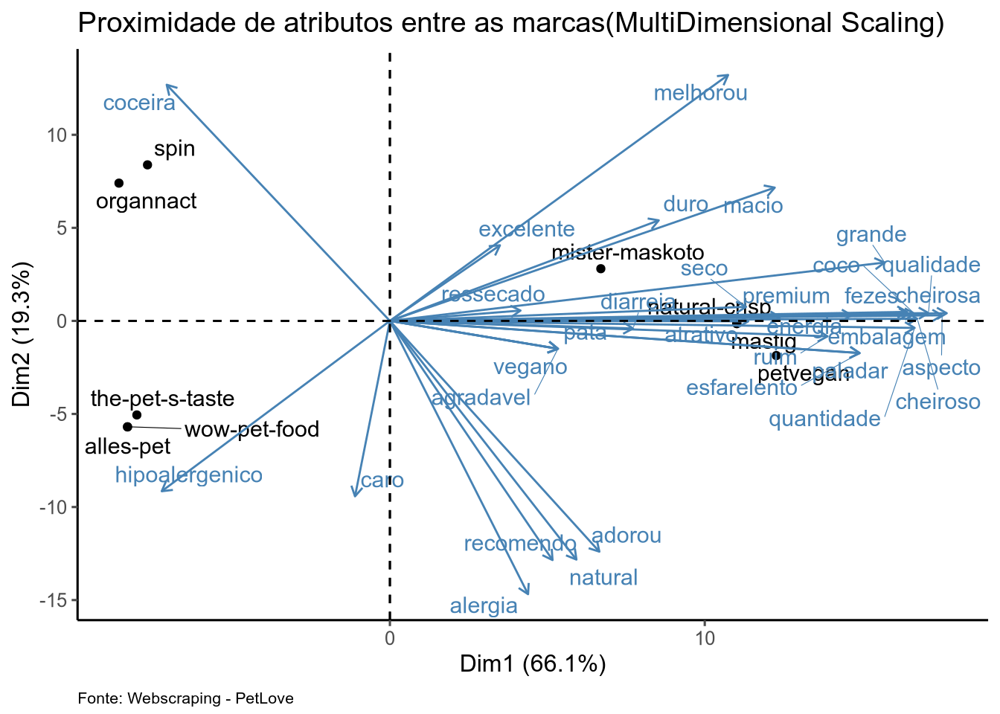
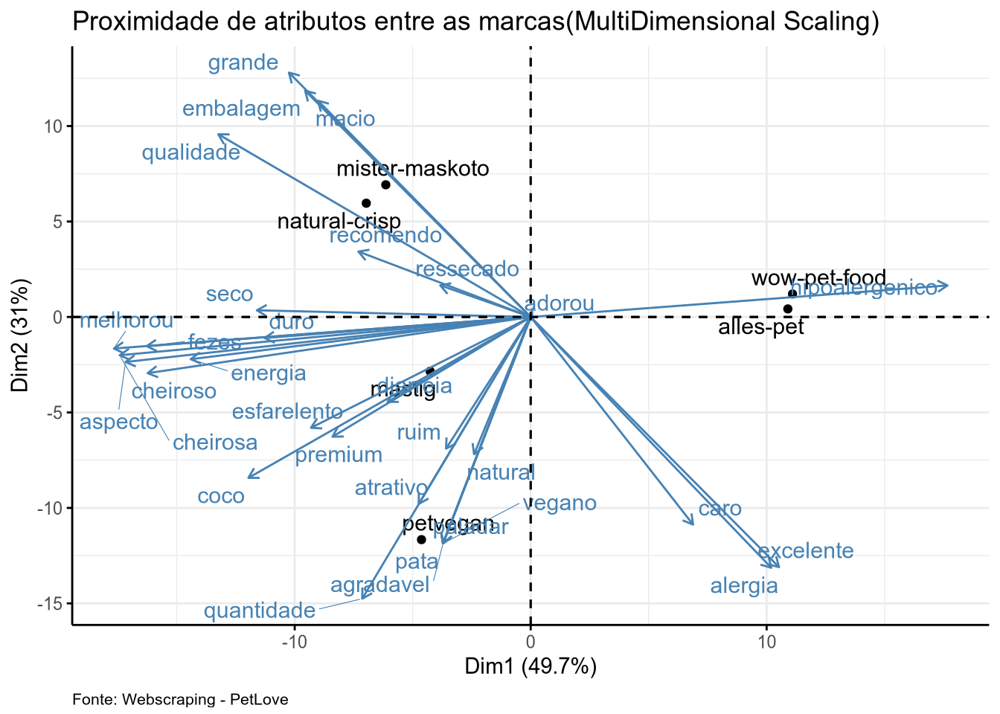
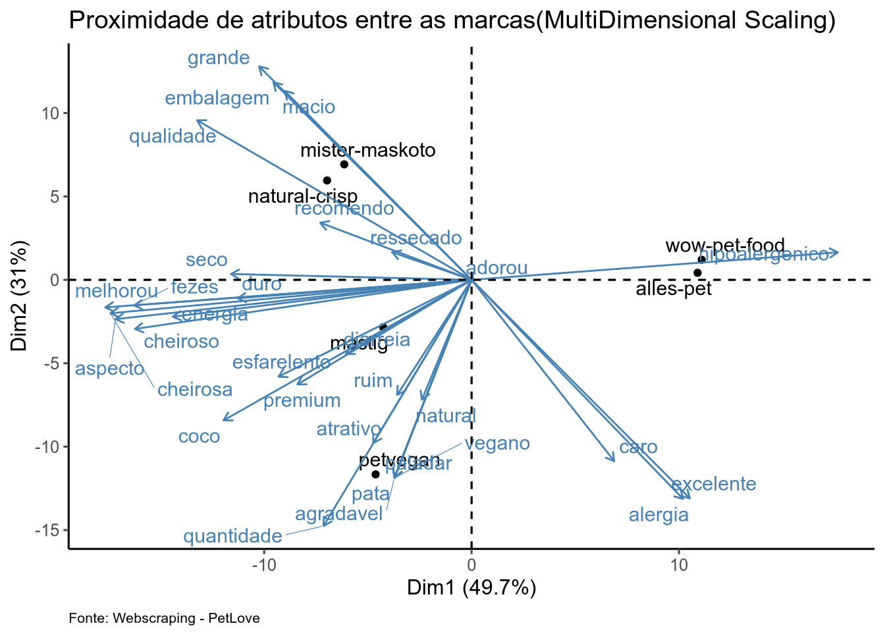

setwd("/home/antonio/Insper/Marketing Analytics/Trabalho Final")
library(reticulate)
use_virtualenv("./.venv", required = TRUE)Trabalho Final Marketing - Antonio Paneguini, Pedro Miné, Victor Tokunaga
Introdução
Neste relatório, nos dedicamos a criar uma analise de percepção de marcas de Petiscos de Cachorro para podermos entender quais são os termos mais importantes e frequentes tidos pelos clientes quando eles consideram comprar um biscoito em um mercado pet cada vez mais inserido nas dinamicas familiares modernas, onde o cuidado do animal de estimação se torna prioridade alta por partes dos tutores. O relatório sera feito baseado em uma pesquisa previamente realizada pela empresa Petí, vendedora de petiscos saudáveis para animais de estimação. Tendo um foco maior nos petiscos hipoalergenicos (baixo risco de gerar alergias)
Contextualização
A empresa Petí, atuante no mercado de Pet Treats, estava interessada em analises de percepção de seus proprios produtos e o posicionamento de si mesma no mercado. Para poder dimensionalizar sua situação, foi primeiro necessario fazer uma analise dos concorrentes para se inserir eles no mercado e ter uma ideia de seu posicionamento em relação a eles.
Como a Petí não dispões de uma volumetria alta de dados sobre a percepção dos clientes sobre si, foi dado preferencia a tentar se projetar perto de empresas que usam produtos e linguagens semelhantes. Apos algumas analises de clusterização preliminares (pode ser lida no arquivo Analise_Predição_Petisco_Bifinho.html incluso, mas nao sera o foco do trabalho), foi apresentado para os socios uma lista de empresas que foram identificadas como potenciais concorrentes. Em uma votação cega, os sócios deveriam votar em quem eles achassem que era um potencial concorrente direto, dando uma pontuação binaria de 1 ou 0. Ao final da votação, o score total de cada marca foi somado com um maximo de tres:
- Risco Alto (3 pontos)
- Risco Médio (2 pontos)
- Risco Baixo (1 ponto)
- Risco Nulo (0 pontos, ninguem votou nessa marca)
Base de Dados
A base foi extraida por meio de Web Scraping do site de e-commerce da empresa PetLove (https://www.petlove.com.br) realizado por bots usando a biblioteca Selenium do Python. Uma versão do script utilizado esta disponivel em: https://github.com/AntonioInsper/webscraper-petlove
Metodologia de WebScraping
Foi orçado palavras-chave relevantes que potencias consumidores colocariam na barra de pesquisa de e-commerces, o bot iria colar as palavras -chaves armazenadas em uma lista na barra de pesuisa, entraroa dentro de cada item dipsonibilizado pela consulta, retiraria informação gerais de cada produto, as avaliações, os títulos as notas das avaliações e as questões dos clientes. As palavras-chaves utilizadas foram as que mais se encaixavam no perfil de produtos da Petí:
- Petisco Natural Cães
- Petisco natural
- Petisco hipoalergenico
- petisco suplementoso
- Petisco calmante
- petisco Super Premium
- inseto
- insect
- Hipoalergenico
- mordedor
- Gastro
- Bifinho
- Bifinho Super Premium
- Bifinho Natural
- Bifinho hipoalergenico
- tenebrio
- Alimentação natural fresca
- Mordedor natural
- suplemento animal
Transformações
import pandas as pd
import glob
import os
import re
from pathlib import Path
import matplotlib.pyplot as plt
import seaborn as sns
import numpy as np
from wordcloud import WordCloud, STOPWORDS
import altair as alt
import numpy as np
from sklearn.preprocessing import LabelEncoder
from sklearn.preprocessing import OneHotEncoder
from sklearn.preprocessing import StandardScaler
from sklearn.model_selection import train_test_split
from sklearn.feature_extraction.text import TfidfVectorizer
from sklearn.cluster import KMeans
import nltk
nltk.download('stopwords') Truefrom sklearn.decomposition import PCA
from nltk.corpus import stopwords
from sklearn.tree import DecisionTreeClassifier, plot_tree # Import Decision Tree Classifier
from sklearn.model_selection import train_test_split # Import train_test_split function
from sklearn import metrics
from scipy.sparse import hstack
from sklearn.metrics import classification_report, accuracy_score
from sklearn.preprocessing import label_binarize
from sklearn.metrics import roc_curve, auc
from sklearn.multiclass import OneVsRestClassifier
from sklearn.model_selection import train_test_split
from sklearn.tree import DecisionTreeClassifier
import matplotlib.pyplot as plt
from sklearn.metrics import RocCurveDisplay
from sklearn.metrics import ConfusionMatrixDisplay, confusion_matrix
from sklearn.ensemble import RandomForestClassifier
from sklearn.multiclass import OneVsRestClassifier
from sklearn.model_selection import GridSearchCVdef extrair_searchword(nome_arquivo):
match = re.search(r"SEARCHWORD(\d+)", nome_arquivo)
return int(match.group(1)) if match else float('inf')
df = pd.read_csv('df_risco_conc.csv')
df['Palavra_Chave'].unique()array(['insect', 'Hipoalergenico', 'Petisco Natural Cães', 'mordedor',
'inseto', 'petisco Super Premium', 'Gastro',
'Bifinho Super Premium', 'suplemento animal', 'Bifinho Natural',
'Petisco calmante', 'petisco suplementoso', 'Petisco natural',
'Petisco hipoalergenico', 'Alimentação natural fresca', 'Bifinho'],
dtype=object)df_petisco = df[df['Palavra_Chave'].isin(['Petisco calmante','Petisco Natural Cães','petisco Super Premium','petisco suplementoso','Petisco hipoalergenico', 'Bifinho Super Premium','Bifinho','Bifinho Natural','Bifinho Super Premium'])]
df_petisco = df_petisco[df_petisco['Qtde_Aval'] != 0]
df_petisco[['Risco_Concorrencia_Predito', 'Nota_Produto', 'Qtde_Aval']].value_counts()Risco_Concorrencia_Predito Nota_Produto Qtde_Aval
Risco Alto 5.0 1 20
Risco Baixo 5.0 1 9
Risco Alto 1.0 1 4
4.8 16 4
5.0 3 4
..
Risco Médio 4.0 1 1
3.8 12 1
3.7 6 1
3 1
5.0 3 1
Name: count, Length: 79, dtype: int64df_petisco[['Marca_Produto', 'Risco_Concorrencia_Predito']].value_counts()Marca_Produto Risco_Concorrencia_Predito
wow-pet-food Risco Alto 20
natural-crisp Risco Alto 20
spin Risco Alto 20
petvegan Risco Médio 14
mastig Risco Alto 13
xisdog Risco Baixo 10
nutrilus-pro Risco Baixo 8
mister-maskoto Risco Médio 7
natural-farm Risco Alto 4
alles-pet Risco Alto 4
origens Risco Baixo 4
organnact Risco Alto 4
baw-waw Risco Baixo 3
desidrat Risco Alto 3
oh-lala-pet Risco Alto 3
just Risco Alto 2
premier Risco Médio 2
papapets Risco Médio 2
the-pet-s-taste Risco Alto 2
quatree Risco Baixo 2
pettreats Risco Médio 1
simple-dog Risco Baixo 1
Name: count, dtype: int64df_petisco = df_petisco[df_petisco['Risco_Concorrencia_Predito'] != 'Risco Nulo']
df_petisco = df_petisco[~df_petisco['Nome_Produto'].str.contains('Gatos')]
df_petisco = df_petisco[~df_petisco['Nome_Produto'].str.contains('Ração')]
df_petisco[['Marca_Produto', 'Risco_Concorrencia_Predito']].value_counts()Marca_Produto Risco_Concorrencia_Predito
natural-crisp Risco Alto 18
spin Risco Alto 16
petvegan Risco Médio 14
wow-pet-food Risco Alto 13
mastig Risco Alto 11
xisdog Risco Baixo 10
mister-maskoto Risco Médio 7
nutrilus-pro Risco Baixo 7
alles-pet Risco Alto 4
origens Risco Baixo 4
organnact Risco Alto 4
natural-farm Risco Alto 4
baw-waw Risco Baixo 3
oh-lala-pet Risco Alto 3
desidrat Risco Alto 3
just Risco Alto 2
papapets Risco Médio 2
quatree Risco Baixo 2
the-pet-s-taste Risco Alto 2
simple-dog Risco Baixo 1
pettreats Risco Médio 1
Name: count, dtype: int64diretorio = Path("Comentarios")
cmmt_files = list(diretorio.glob("ComentariosPetlove*"))
arquivos_ordenados = sorted(cmmt_files, key=lambda x:extrair_searchword(str(x)))
dfs = [pd.read_csv(arquivo) for arquivo in arquivos_ordenados]
df_cmmt = pd.concat (dfs, ignore_index=True)<string>:1: FutureWarning: The behavior of DataFrame concatenation with empty or all-NA entries is deprecated. In a future version, this will no longer exclude empty or all-NA columns when determining the result dtypes. To retain the old behavior, exclude the relevant entries before the concat operation.df_cmmt_conc = df_cmmt[df_cmmt['Produto'].isin(df_petisco['Nome_Produto'])]
df_cmmt_conc.rename(columns={'Produto' : 'Nome_Produto'}, inplace=True)<string>:4: SettingWithCopyWarning:
A value is trying to be set on a copy of a slice from a DataFrame
See the caveats in the documentation: https://pandas.pydata.org/pandas-docs/stable/user_guide/indexing.html#returning-a-view-versus-a-copydf_cmmt_conc = df_cmmt_conc.merge(df_petisco[['Nome_Produto', 'Risco_Concorrencia_Predito']], on='Nome_Produto', how='inner')
df_cmmt_conc = df_cmmt_conc[df_cmmt_conc['Palavra_Chave'].isin(df_petisco['Palavra_Chave'])]
df_cmmt_conc.rename(columns={'Nome_Comentario' : 'Nomes'}, inplace=True)
df_cmmt_conc['Comentários'] = df_cmmt_conc['Comentários'].fillna("Nenhum comentário redigido")
df_cmmt_conc = df_cmmt_conc.iloc[:,1:]
df_cmmt_conc['Marca'].unique()array(['alles-pet', 'petvegan', 'natural-crisp', 'mastig',
'the-pet-s-taste', 'wow-pet-food', 'mister-maskoto', 'organnact',
'spin'], dtype=object)Após as limpezas, descemos o numero de marcas para apenas 9 marcas com dados relevantes a serem analisados
library(tidyverse)── Attaching core tidyverse packages ──────────────────────── tidyverse 2.0.0 ──
✔ dplyr 1.1.4 ✔ readr 2.1.5
✔ forcats 1.0.0 ✔ stringr 1.5.1
✔ ggplot2 3.5.2 ✔ tibble 3.2.1
✔ lubridate 1.9.4 ✔ tidyr 1.3.1
✔ purrr 1.0.4
── Conflicts ────────────────────────────────────────── tidyverse_conflicts() ──
✖ dplyr::filter() masks stats::filter()
✖ dplyr::lag() masks stats::lag()
ℹ Use the conflicted package (<http://conflicted.r-lib.org/>) to force all conflicts to become errorslibrary(factoextra)Welcome! Want to learn more? See two factoextra-related books at https://goo.gl/ve3WBalibrary(ggthemes)
library(ggrepel)
library(tidytext)
library(skimr)
library(stringi)
#setwd('/home/antonio/Insper/Marketing Analytics/Trabalho Final')
df <- py$df_cmmt_concdf <- df %>%
distinct(Link, Nomes, .keep_all=TRUE)print(head(df, 5)) Título Nota_Avaliação Nomes
0 Bom 5 Thaís
2 Perfeito 5 Tatiana
4 Muito bom!!! 5 Viviane
6 Sabor 2 Edimara
8 Bom 3 Elessandra
Comentários
0 Minha cachorrinha tem alergia alimentar e o petisco foi super aprovado. Não deu nenhuma reação e ela gostou do sabor. Só não ficou calminha pq é uma pinscher e é naturalmente estressada hehehe
2 Maravilhosa
4 Deixa pet mais calmo!! Buldogue
6 Muito amargo… é muito cheiro de camomila, meus dogs não se interessaram..
8 Meu cão gostou
Data_Comentario Marca
0 17/11/2024 19:57 alles-pet
2 01/07/2024 08:19 alles-pet
4 27/11/2023 19:11 alles-pet
6 28/12/2022 20:08 alles-pet
8 16/12/2022 21:55 alles-pet
Nome_Produto
0 Biscoito Hipoalergênico Alles Pet Maracujá e Camomila
2 Biscoito Hipoalergênico Alles Pet Maracujá e Camomila
4 Biscoito Hipoalergênico Alles Pet Maracujá e Camomila
6 Biscoito Hipoalergênico Alles Pet Maracujá e Camomila
8 Biscoito Hipoalergênico Alles Pet Maracujá e Camomila
Link
0 https://www.petlove.com.br/biscoito-hipoalergenico-alles-pet-maracuja-e-camomila/p?sku=3102751365
2 https://www.petlove.com.br/biscoito-hipoalergenico-alles-pet-maracuja-e-camomila/p?sku=3102751365
4 https://www.petlove.com.br/biscoito-hipoalergenico-alles-pet-maracuja-e-camomila/p?sku=3102751365
6 https://www.petlove.com.br/biscoito-hipoalergenico-alles-pet-maracuja-e-camomila/p?sku=3102751365
8 https://www.petlove.com.br/biscoito-hipoalergenico-alles-pet-maracuja-e-camomila/p?sku=3102751365
Palavra_Chave Risco_Concorrencia_Predito
0 Petisco calmante Risco Alto
2 Petisco calmante Risco Alto
4 Petisco calmante Risco Alto
6 Petisco calmante Risco Alto
8 Petisco calmante Risco Altoskim(df)| Name | df |
| Number of rows | 7558 |
| Number of columns | 10 |
| _______________________ | |
| Column type frequency: | |
| character | 9 |
| numeric | 1 |
| ________________________ | |
| Group variables | None |
Variable type: character
| skim_variable | n_missing | complete_rate | min | max | empty | n_unique | whitespace |
|---|---|---|---|---|---|---|---|
| Título | 0 | 1 | 2 | 85 | 0 | 441 | 0 |
| Nomes | 0 | 1 | 3 | 31 | 0 | 543 | 0 |
| Comentários | 0 | 1 | 1 | 1041 | 0 | 686 | 0 |
| Data_Comentario | 0 | 1 | 4 | 17 | 0 | 736 | 0 |
| Marca | 0 | 1 | 4 | 15 | 0 | 9 | 0 |
| Nome_Produto | 0 | 1 | 37 | 73 | 0 | 38 | 0 |
| Link | 0 | 1 | 72 | 112 | 0 | 38 | 0 |
| Palavra_Chave | 0 | 1 | 15 | 22 | 0 | 6 | 0 |
| Risco_Concorrencia_Predito | 0 | 1 | 10 | 11 | 0 | 2 | 0 |
Variable type: numeric
| skim_variable | n_missing | complete_rate | mean | sd | p0 | p25 | p50 | p75 | p100 | hist |
|---|---|---|---|---|---|---|---|---|---|---|
| Nota_Avaliação | 0 | 1 | 4.55 | 1.03 | 1 | 5 | 5 | 5 | 5 | ▁▁▁▁▇ |
Topic Models
library(tm)Loading required package: NLP
Attaching package: 'NLP'The following object is masked from 'package:ggplot2':
annotatelibrary(topicmodels)
library(slam)
stopwords("pt") [1] "de" "a" "o" "que" "e"
[6] "do" "da" "em" "um" "para"
[11] "com" "não" "uma" "os" "no"
[16] "se" "na" "por" "mais" "as"
[21] "dos" "como" "mas" "ao" "ele"
[26] "das" "à" "seu" "sua" "ou"
[31] "quando" "muito" "nos" "já" "eu"
[36] "também" "só" "pelo" "pela" "até"
[41] "isso" "ela" "entre" "depois" "sem"
[46] "mesmo" "aos" "seus" "quem" "nas"
[51] "me" "esse" "eles" "você" "essa"
[56] "num" "nem" "suas" "meu" "às"
[61] "minha" "numa" "pelos" "elas" "qual"
[66] "nós" "lhe" "deles" "essas" "esses"
[71] "pelas" "este" "dele" "tu" "te"
[76] "vocês" "vos" "lhes" "meus" "minhas"
[81] "teu" "tua" "teus" "tuas" "nosso"
[86] "nossa" "nossos" "nossas" "dela" "delas"
[91] "esta" "estes" "estas" "aquele" "aquela"
[96] "aqueles" "aquelas" "isto" "aquilo" "estou"
[101] "está" "estamos" "estão" "estive" "esteve"
[106] "estivemos" "estiveram" "estava" "estávamos" "estavam"
[111] "estivera" "estivéramos" "esteja" "estejamos" "estejam"
[116] "estivesse" "estivéssemos" "estivessem" "estiver" "estivermos"
[121] "estiverem" "hei" "há" "havemos" "hão"
[126] "houve" "houvemos" "houveram" "houvera" "houvéramos"
[131] "haja" "hajamos" "hajam" "houvesse" "houvéssemos"
[136] "houvessem" "houver" "houvermos" "houverem" "houverei"
[141] "houverá" "houveremos" "houverão" "houveria" "houveríamos"
[146] "houveriam" "sou" "somos" "são" "era"
[151] "éramos" "eram" "fui" "foi" "fomos"
[156] "foram" "fora" "fôramos" "seja" "sejamos"
[161] "sejam" "fosse" "fôssemos" "fossem" "for"
[166] "formos" "forem" "serei" "será" "seremos"
[171] "serão" "seria" "seríamos" "seriam" "tenho"
[176] "tem" "temos" "tém" "tinha" "tínhamos"
[181] "tinham" "tive" "teve" "tivemos" "tiveram"
[186] "tivera" "tivéramos" "tenha" "tenhamos" "tenham"
[191] "tivesse" "tivéssemos" "tivessem" "tiver" "tivermos"
[196] "tiverem" "terei" "terá" "teremos" "terão"
[201] "teria" "teríamos" "teriam" corpus <- VCorpus(VectorSource(df$Comentários))
corpus <- tm_map(corpus, content_transformer(tolower))
corpus <- tm_map(corpus, removePunctuation)
corpus <- tm_map(corpus, stripWhitespace)
corpus <- tm_map(corpus, removeWords, stopwords("pt"))
# Create DocumentTermMatrix (DTM)
dtm <- DocumentTermMatrix(corpus)
# Remove empty rows (required for LDA)
dtm <- dtm[rowSums(as.matrix(dtm)) > 0, ]
# 5. Remover documentos vazios (linhas com 0 termos)
dtm <- dtm[row_sums(dtm) > 0, ]
# 6. Remover termos raros (ex: que aparecem em apenas 1 documento)
dtm <- dtm[, col_sums(dtm) > 1]
# (opcional) Garantir que DTM final tem conteúdo
if (nrow(dtm) == 0 | ncol(dtm) == 0) stop("DTM vazio após limpeza!")
# Set number of topics
k <- 15 # for example, 115 topics
# Fit LDA using Gibbs sampling
lda_model <- LDA(dtm, k = k, control = list(seed = 777))
terms(lda_model, 5) # top 5 terms per topic Topic 1 Topic 2 Topic 3 Topic 4 Topic 5 Topic 6
[1,] "pets" "adorou" "frango" "ótimo" "amou" "ama"
[2,] "fezes" "comeu" "pois" "produto" "amam" "biscoito"
[3,] "bem" "ração" "embalagem" "pra" "saudável" "biscoitinho"
[4,] "todos" "cachorra" "petisco" "pet" "biscoito" "dar"
[5,] "cheiro" "tão" "amou" "comprar" "cheiroso" "kkkk"
Topic 7 Topic 8 Topic 9 Topic 10 Topic 11 Topic 12 Topic 13
[1,] "bom" "bastante" "duro" "excelente" "parece" "gostaram" "ração"
[2,] "cheiro" "amaram" "achei" "ótima" "super" "bem" "come"
[3,] "comprei" "cachorros" "gatos" "custo" "ser" "gato" "vez"
[4,] "adora" "bem" "pedaços" "benefício" "pra" "ser" "gosta"
[5,] "deu" "petiscos" "meio" "ração" "gostou" "porém" "única"
Topic 14 Topic 15
[1,] "petisco" "cachorro"
[2,] "natural" "amou"
[3,] "gatos" "boa"
[4,] "amaram" "pet"
[5,] "alergia" "macio" topic_distributions <- posterior(lda_model)$topics
term_distributions <- posterior(lda_model)$terms
print(head(topic_distributions), 5) 1 2 3 4 5 6 7
1 0.0035460 0.0035460 0.0035460 0.0035460 0.2551043 0.0035460 0.0035460
2 0.0293495 0.0293495 0.0293495 0.0293495 0.0293495 0.0293495 0.0293495
3 0.0109543 0.0109543 0.0109543 0.0109543 0.6377184 0.0109543 0.0109543
4 0.2638620 0.0090612 0.0090612 0.0090612 0.0090612 0.0090612 0.0090612
5 0.0188167 0.0188167 0.0188167 0.0188167 0.0188167 0.0188167 0.0188167
6 0.0044485 0.0044485 0.0044485 0.0044485 0.0044485 0.0044485 0.0044485
8 9 10 11 12 13 14
1 0.0035460 0.0035460 0.2064339 0.0035460 0.0035460 0.0035460 0.4959100
2 0.0293495 0.0293495 0.0293495 0.0293495 0.0293495 0.0293495 0.0293495
3 0.0109543 0.0109543 0.0109543 0.0109543 0.2198757 0.0109543 0.0109543
4 0.0090612 0.6183422 0.0090612 0.0090612 0.0090612 0.0090612 0.0090612
5 0.0188167 0.0188167 0.0188167 0.0188167 0.7365657 0.0188167 0.0188167
6 0.0044485 0.0044485 0.0044485 0.0044485 0.0044485 0.2589772 0.0044485
15
1 0.0035460
2 0.5891065
3 0.0109543
4 0.0090612
5 0.0188167
6 0.6831918# Convert topic model to tidy format
topics_tidy <- tidy(lda_model)
# Top 10 terms per topic
top_terms <- topics_tidy %>%
group_by(topic) %>%
top_n(10, beta) %>%
ungroup() %>%
arrange(topic, -beta)
# Plot
ggplot(top_terms, aes(term, beta, fill = factor(topic))) +
geom_col(show.legend = FALSE) +
facet_wrap(~ topic, scales = "free") +
coord_flip() +
labs(title = "Top Terms per Topic", x = NULL, y = "β (term importance)")
library(pheatmap)
phi <- posterior(lda_model)$terms
top_terms <- apply(phi, 1, function(x) order(x, decreasing = TRUE)[1:10])
term_names <- unique(colnames(phi)[top_terms])
heatmap_data <- phi[, term_names]
pheatmap(heatmap_data, cluster_rows = TRUE, cluster_cols = TRUE,
main = "Heatmap of Top Terms by Topic") 
dtm_matrix <- as.matrix(dtm)
terms_df <-as.data.frame(dtm_matrix)
doc_index <-as.numeric(rownames((terms_df)))
terms_df$Marca <- df$Marca[as.numeric(rownames(terms_df))]
terms_df$Score <- df$Nota_Avaliação[doc_index]
brand_term_avg <- terms_df %>%
group_by(Marca) %>%
summarise(across(.cols = where(is.numeric), .fns = mean, na.rm = TRUE))Warning: There was 1 warning in `summarise()`.
ℹ In argument: `across(.cols = where(is.numeric), .fns = mean, na.rm = TRUE)`.
ℹ In group 1: `Marca = "alles-pet"`.
Caused by warning:
! The `...` argument of `across()` is deprecated as of dplyr 1.1.0.
Supply arguments directly to `.fns` through an anonymous function instead.
# Previously
across(a:b, mean, na.rm = TRUE)
# Now
across(a:b, \(x) mean(x, na.rm = TRUE))term_score_corr <- cor(brand_term_avg %>% select(-Marca), use= "complete.obs")
term_vs_score <- term_score_corr[, "Score"]
term_vs_score <- sort(term_vs_score, decreasing = TRUE)
head(term_vs_score, 10) Score ficar uso cachorrinhas faz alto
1.0000000 0.7541872 0.7531175 0.7470225 0.7470225 0.7402951
doguinha energia bom apenas
0.7402951 0.7402951 0.7387859 0.7360426 tail(term_vs_score, 10) recebi retirar salvação serviu tirar trabalho umpacote
-0.8926686 -0.8926686 -0.8926686 -0.8926686 -0.8926686 -0.8926686 -0.8926686
volto condições pra
-0.8926686 -0.8947046 -0.9041246 library(ggplot2)
top_terms <- sort(term_vs_score, decreasing = TRUE)
top_terms_df <- data.frame(term = names(top_terms), corr = top_terms)
ggplot(top_terms_df %>% slice_head(n = 15), aes(x = reorder(term, corr), y = corr)) +
geom_col(fill = "steelblue") +
coord_flip() +
labs(title = "Terms Most Positively Correlated with Review Score",
x = "Term", y = "Correlation with Score")
stop_words = stopwords.words('portuguese')
stopwords = stop_words
other_words = ['/n', 'Ja', 'dtype', 'Name', 'int', 'Otto', 'gato', 'gata', 'object', 'Comentários', 'Length', 'muita', 'muito']
for word in other_words:
stopwords.append(word)
for nota in df_cmmt_conc['Nota_Avaliação'].unique():
comment_nota = df_cmmt_conc[df_cmmt_conc['Nota_Avaliação'] == nota]['Comentários']
print(f'{nota}')
text = comment_nota
wordcloud = WordCloud(
width = 3000,
height= 2000,
background_color= 'black',
stopwords= stopwords).generate(str(text))
fig = plt.figure(
figsize= (40,30),
facecolor = 'k',
edgecolor = 'k')
plt.imshow(wordcloud, interpolation='bilinear')
plt.axis('off')
plt.tight_layout(pad=0)
plt.show()5.0
<matplotlib.image.AxesImage object at 0x7fa6c5397e00>
(np.float64(-0.5), np.float64(2999.5), np.float64(1999.5), np.float64(-0.5))
2.0
<matplotlib.image.AxesImage object at 0x7fa6b9db96d0>
(np.float64(-0.5), np.float64(2999.5), np.float64(1999.5), np.float64(-0.5))
3.0
<matplotlib.image.AxesImage object at 0x7fa6b9df1950>
(np.float64(-0.5), np.float64(2999.5), np.float64(1999.5), np.float64(-0.5))
4.0
<matplotlib.image.AxesImage object at 0x7fa6b9e34cd0>
(np.float64(-0.5), np.float64(2999.5), np.float64(1999.5), np.float64(-0.5))
1.0
<matplotlib.image.AxesImage object at 0x7fa6b9188190>
(np.float64(-0.5), np.float64(2999.5), np.float64(1999.5), np.float64(-0.5))

Termos Escolhidos
Os termos escolhidos foram tanto pelas analises exploratorias iniciais como quanto por decisões de negócios passadas, inputs dos membros do grupo, inputs dos sócios da Petí que consultaram no projeto durante esta fase e subsequenets testes na modelagem de PCA. Apos alguns testes e discussões, chegamos nesta lista de atributos descrita na variavel “termos foco”
termos_foco <- tolower(c(
"composição", "natural", "cheiroso", "cheirosa", "adorou", "agradavel",
"qualidade", "benefício", "excelente", "seco", "diarreia",
"recomendo", "paladar", "duro", "aparencia", "hipoalergenico",
"grande", "alimentação", "proteíca", "aspecto",
"fezes", "coco", "melhorou" , "piorou" , "alergia" , "coceira" , "pata" ,
"vermelho", "macio", "ressecado", "esfarelento", "premium" ,"atrativo", "aceitação",
"vegano", "ruim", "energia", "quantidade", "caro", "barato", "embalagem"
))termos_foco <- tolower(c(
"composição", "natural", "cheiroso", "cheirosa", "adorou", "agradavel",
"qualidade", "benefício", "excelente", "seco", "diarreia",
"recomendo", "paladar", "duro", "aparencia", "hipoalergenico",
"grande", "alimentação", "proteíca", "aspecto",
"fezes", "coco", "melhorou" , "piorou" , "alergia" , "coceira" , "pata" ,
"vermelho", "macio", "ressecado", "esfarelento", "premium" ,"atrativo", "aceitação",
"vegano", "ruim", "energia", "quantidade", "caro", "barato", "embalagem"
))
termos_foco <- tolower(stri_trans_general(termos_foco, "Latin-ASCII"))
termos_validos <- termos_foco[termos_foco %in% colnames(terms_df)]
resultados <- lapply(termos_validos, function(term) {
subset <- terms_df[terms_df[[term]] > 0, ]
data.frame(
Termo = term,
Média_Score = mean(subset$Score, na.rm = TRUE),
Frequência = nrow(subset)
)
})
resultados_df <- bind_rows(resultados)
resultados_df <- resultados_df %>% arrange(desc(Média_Score))
print(resultados_df) Termo Média_Score Frequência
1 agradavel 5.000000 2
2 excelente 5.000000 371
3 paladar 5.000000 75
4 hipoalergenico 5.000000 4
5 melhorou 5.000000 25
6 coceira 5.000000 4
7 pata 5.000000 2
8 esfarelento 5.000000 19
9 vegano 5.000000 3
10 cheirosa 4.955224 67
11 alergia 4.951220 123
12 aspecto 4.950000 60
13 quantidade 4.869565 46
14 cheiroso 4.822581 124
15 adorou 4.809117 351
16 qualidade 4.802632 228
17 natural 4.715618 429
18 coco 4.691176 68
19 macio 4.686747 83
20 embalagem 4.635714 140
21 fezes 4.605096 314
22 grande 4.604651 86
23 recomendo 4.500000 204
24 energia 4.125000 24
25 ruim 4.000000 24
26 caro 3.600000 20
27 premium 3.478261 69
28 atrativo 3.250000 64
29 duro 3.159836 244
30 seco 3.037037 108
31 diarreia 2.268657 67
32 ressecado 1.136364 22resultados_por_marca <- lapply(termos_validos, function(term) {
terms_df %>%
filter(.data[[term]] > 0) %>%
group_by(Marca) %>%
summarise(
Termo = term,
Média_Score = mean(Score, na.rm = TRUE),
Frequência = n()
)
})
df_marca_termos <- bind_rows(resultados_por_marca)
resultados_por_marca <- lapply(termos_validos, function(term) {
terms_df %>%
filter(.data[[term]] > 0) %>%
group_by(Marca) %>%
summarise(
Termo = term,
Média_Score = mean(Score, na.rm = TRUE),
Frequência = n()
)
})
df_marca_termos <- bind_rows(resultados_por_marca)
print(head(df_marca_termos, 5))# A tibble: 5 × 4
Marca Termo Média_Score Frequência
<chr> <chr> <dbl> <int>
1 alles-pet natural 5 3
2 mastig natural 4.65 92
3 mister-maskoto natural 4.5 6
4 natural-crisp natural 4.72 169
5 petvegan natural 4.75 155summary(df_marca_termos) Marca Termo Média_Score Frequência
Length:135 Length:135 Min. :1.000 Min. : 1.0
Class :character Class :character 1st Qu.:4.000 1st Qu.: 4.0
Mode :character Mode :character Median :4.769 Median : 12.0
Mean :4.245 Mean : 25.7
3rd Qu.:5.000 3rd Qu.: 27.0
Max. :5.000 Max. :169.0 skim(df_marca_termos)| Name | df_marca_termos |
| Number of rows | 135 |
| Number of columns | 4 |
| _______________________ | |
| Column type frequency: | |
| character | 2 |
| numeric | 2 |
| ________________________ | |
| Group variables | None |
Variable type: character
| skim_variable | n_missing | complete_rate | min | max | empty | n_unique | whitespace |
|---|---|---|---|---|---|---|---|
| Marca | 0 | 1 | 4 | 15 | 0 | 9 | 0 |
| Termo | 0 | 1 | 4 | 14 | 0 | 32 | 0 |
Variable type: numeric
| skim_variable | n_missing | complete_rate | mean | sd | p0 | p25 | p50 | p75 | p100 | hist |
|---|---|---|---|---|---|---|---|---|---|---|
| Média_Score | 0 | 1 | 4.24 | 1.10 | 1 | 4 | 4.77 | 5 | 5 | ▁▁▂▁▇ |
| Frequência | 0 | 1 | 25.70 | 33.73 | 1 | 4 | 12.00 | 27 | 169 | ▇▁▁▁▁ |
df_pivot <- df_marca_termos %>%
select(Marca, Termo, Média_Score) %>%
pivot_wider(
names_from = Termo,
values_from = Média_Score
)
df_pivot[is.na(df_pivot)] <- 0PCA
df_pivot <- as.data.frame(df_pivot)
print(head(df_pivot), 5) Marca natural cheiroso cheirosa adorou agradavel qualidade
1 alles-pet 5.000000 0.000000 0.00 4.800000 0 0.000000
2 mastig 4.652174 4.800000 5.00 4.823529 0 4.818182
3 mister-maskoto 4.500000 4.000000 4.75 4.714286 0 4.666667
4 natural-crisp 4.715976 4.795455 5.00 4.811881 0 4.769231
5 petvegan 4.748387 4.894737 5.00 4.811024 5 4.873418
6 the-pet-s-taste 5.000000 0.000000 0.00 5.000000 0 0.000000
excelente seco diarreia recomendo paladar duro hipoalergenico
1 5 0.000000 0.000000 5.000000 0 0.000000 5
2 5 3.000000 2.333333 4.500000 5 3.125000 0
3 5 4.000000 1.000000 4.280000 0 3.200000 0
4 5 3.000000 2.333333 4.446154 5 3.195876 0
5 5 3.028571 2.500000 4.536232 5 3.236111 0
6 0 0.000000 0.000000 5.000000 0 0.000000 0
grande aspecto fezes coco melhorou alergia coceira pata macio
1 0.000000 0.0 0.000000 0.000000 0 4.925926 0 0 0.000000
2 4.750000 5.0 4.600000 4.666667 5 5.000000 0 0 4.000000
3 5.000000 4.5 4.615385 4.500000 5 0.000000 0 0 4.600000
4 4.750000 5.0 4.600000 4.653846 5 5.000000 0 0 4.000000
5 4.791667 5.0 4.612500 4.791667 5 5.000000 0 5 4.895833
6 0.000000 0.0 0.000000 0.000000 0 4.888889 0 0 0.000000
ressecado esfarelento premium atrativo vegano ruim energia quantidade caro
1 0 0 0.000000 0.000000 0 0.0 0.000 0 3
2 1 5 3.333333 3.333333 0 5.0 4.000 5 0
3 2 0 3.333333 2.500000 0 1.0 4.000 3 0
4 1 5 3.333333 3.333333 0 5.0 4.000 5 0
5 1 5 3.809524 3.315789 5 3.5 4.375 5 5
6 0 0 0.000000 0.000000 0 0.0 0.000 0 3
embalagem
1 0.000000
2 4.666667
3 4.400000
4 4.666667
5 4.659574
6 0.000000skim(df_pivot)| Name | df_pivot |
| Number of rows | 9 |
| Number of columns | 33 |
| _______________________ | |
| Column type frequency: | |
| character | 1 |
| numeric | 32 |
| ________________________ | |
| Group variables | None |
Variable type: character
| skim_variable | n_missing | complete_rate | min | max | empty | n_unique | whitespace |
|---|---|---|---|---|---|---|---|
| Marca | 0 | 1 | 4 | 15 | 0 | 9 | 0 |
Variable type: numeric
| skim_variable | n_missing | complete_rate | mean | sd | p0 | p25 | p50 | p75 | p100 | hist |
|---|---|---|---|---|---|---|---|---|---|---|
| natural | 0 | 1 | 3.74 | 2.12 | 0 | 4.50 | 4.72 | 5.00 | 5.00 | ▂▁▁▁▇ |
| cheiroso | 0 | 1 | 2.05 | 2.45 | 0 | 0.00 | 0.00 | 4.80 | 4.89 | ▇▁▁▁▆ |
| cheirosa | 0 | 1 | 2.19 | 2.60 | 0 | 0.00 | 0.00 | 5.00 | 5.00 | ▇▁▁▁▆ |
| adorou | 0 | 1 | 3.75 | 2.13 | 0 | 4.71 | 4.81 | 4.81 | 5.00 | ▂▁▁▁▇ |
| agradavel | 0 | 1 | 0.56 | 1.67 | 0 | 0.00 | 0.00 | 0.00 | 5.00 | ▇▁▁▁▁ |
| qualidade | 0 | 1 | 2.13 | 2.52 | 0 | 0.00 | 0.00 | 4.77 | 4.87 | ▇▁▁▁▆ |
| excelente | 0 | 1 | 4.44 | 1.67 | 0 | 5.00 | 5.00 | 5.00 | 5.00 | ▁▁▁▁▇ |
| seco | 0 | 1 | 1.45 | 1.74 | 0 | 0.00 | 0.00 | 3.00 | 4.00 | ▇▁▁▅▂ |
| diarreia | 0 | 1 | 0.91 | 1.16 | 0 | 0.00 | 0.00 | 2.33 | 2.50 | ▇▂▁▁▅ |
| recomendo | 0 | 1 | 3.64 | 2.08 | 0 | 4.28 | 4.50 | 5.00 | 5.00 | ▂▁▁▁▇ |
| paladar | 0 | 1 | 1.67 | 2.50 | 0 | 0.00 | 0.00 | 5.00 | 5.00 | ▇▁▁▁▃ |
| duro | 0 | 1 | 1.86 | 1.48 | 0 | 0.00 | 2.00 | 3.20 | 3.24 | ▆▁▁▃▇ |
| hipoalergenico | 0 | 1 | 1.11 | 2.20 | 0 | 0.00 | 0.00 | 0.00 | 5.00 | ▇▁▁▁▂ |
| grande | 0 | 1 | 2.37 | 2.36 | 0 | 0.00 | 1.00 | 4.75 | 5.00 | ▇▁▁▁▆ |
| aspecto | 0 | 1 | 2.17 | 2.57 | 0 | 0.00 | 0.00 | 5.00 | 5.00 | ▇▁▁▁▆ |
| fezes | 0 | 1 | 2.05 | 2.43 | 0 | 0.00 | 0.00 | 4.60 | 4.62 | ▇▁▁▁▆ |
| coco | 0 | 1 | 2.07 | 2.45 | 0 | 0.00 | 0.00 | 4.65 | 4.79 | ▇▁▁▁▆ |
| melhorou | 0 | 1 | 3.33 | 2.50 | 0 | 0.00 | 5.00 | 5.00 | 5.00 | ▃▁▁▁▇ |
| alergia | 0 | 1 | 3.30 | 2.48 | 0 | 0.00 | 4.89 | 5.00 | 5.00 | ▃▁▁▁▇ |
| coceira | 0 | 1 | 1.11 | 2.20 | 0 | 0.00 | 0.00 | 0.00 | 5.00 | ▇▁▁▁▂ |
| pata | 0 | 1 | 0.56 | 1.67 | 0 | 0.00 | 0.00 | 0.00 | 5.00 | ▇▁▁▁▁ |
| macio | 0 | 1 | 2.50 | 2.40 | 0 | 0.00 | 4.00 | 4.60 | 5.00 | ▇▁▁▃▆ |
| ressecado | 0 | 1 | 0.56 | 0.73 | 0 | 0.00 | 0.00 | 1.00 | 2.00 | ▇▁▅▁▂ |
| esfarelento | 0 | 1 | 1.67 | 2.50 | 0 | 0.00 | 0.00 | 5.00 | 5.00 | ▇▁▁▁▃ |
| premium | 0 | 1 | 1.53 | 1.83 | 0 | 0.00 | 0.00 | 3.33 | 3.81 | ▇▁▁▁▆ |
| atrativo | 0 | 1 | 1.39 | 1.66 | 0 | 0.00 | 0.00 | 3.32 | 3.33 | ▇▁▁▂▅ |
| vegano | 0 | 1 | 0.56 | 1.67 | 0 | 0.00 | 0.00 | 0.00 | 5.00 | ▇▁▁▁▁ |
| ruim | 0 | 1 | 1.61 | 2.23 | 0 | 0.00 | 0.00 | 3.50 | 5.00 | ▇▁▁▁▂ |
| energia | 0 | 1 | 1.82 | 2.16 | 0 | 0.00 | 0.00 | 4.00 | 4.38 | ▇▁▁▁▆ |
| quantidade | 0 | 1 | 2.00 | 2.45 | 0 | 0.00 | 0.00 | 5.00 | 5.00 | ▇▁▂▁▅ |
| caro | 0 | 1 | 1.56 | 1.94 | 0 | 0.00 | 0.00 | 3.00 | 5.00 | ▇▁▅▁▂ |
| embalagem | 0 | 1 | 2.04 | 2.42 | 0 | 0.00 | 0.00 | 4.66 | 4.67 | ▇▁▁▁▆ |
summary(df_pivot) Marca natural cheiroso cheirosa
Length:9 Min. :0.000 Min. :0.000 Min. :0.000
Class :character 1st Qu.:4.500 1st Qu.:0.000 1st Qu.:0.000
Mode :character Median :4.716 Median :0.000 Median :0.000
Mean :3.735 Mean :2.054 Mean :2.194
3rd Qu.:5.000 3rd Qu.:4.795 3rd Qu.:5.000
Max. :5.000 Max. :4.895 Max. :5.000
adorou agradavel qualidade excelente
Min. :0.000 Min. :0.0000 Min. :0.000 Min. :0.000
1st Qu.:4.714 1st Qu.:0.0000 1st Qu.:0.000 1st Qu.:5.000
Median :4.811 Median :0.0000 Median :0.000 Median :5.000
Mean :3.753 Mean :0.5556 Mean :2.125 Mean :4.444
3rd Qu.:4.812 3rd Qu.:0.0000 3rd Qu.:4.769 3rd Qu.:5.000
Max. :5.000 Max. :5.0000 Max. :4.873 Max. :5.000
seco diarreia recomendo paladar
Min. :0.000 Min. :0.0000 Min. :0.00 Min. :0.000
1st Qu.:0.000 1st Qu.:0.0000 1st Qu.:4.28 1st Qu.:0.000
Median :0.000 Median :0.0000 Median :4.50 Median :0.000
Mean :1.448 Mean :0.9074 Mean :3.64 Mean :1.667
3rd Qu.:3.000 3rd Qu.:2.3333 3rd Qu.:5.00 3rd Qu.:5.000
Max. :4.000 Max. :2.5000 Max. :5.00 Max. :5.000
duro hipoalergenico grande aspecto
Min. :0.000 Min. :0.000 Min. :0.000 Min. :0.000
1st Qu.:0.000 1st Qu.:0.000 1st Qu.:0.000 1st Qu.:0.000
Median :2.000 Median :0.000 Median :1.000 Median :0.000
Mean :1.862 Mean :1.111 Mean :2.366 Mean :2.167
3rd Qu.:3.196 3rd Qu.:0.000 3rd Qu.:4.750 3rd Qu.:5.000
Max. :3.236 Max. :5.000 Max. :5.000 Max. :5.000
fezes coco melhorou alergia
Min. :0.000 Min. :0.000 Min. :0.000 Min. :0.000
1st Qu.:0.000 1st Qu.:0.000 1st Qu.:0.000 1st Qu.:0.000
Median :0.000 Median :0.000 Median :5.000 Median :4.889
Mean :2.048 Mean :2.068 Mean :3.333 Mean :3.300
3rd Qu.:4.600 3rd Qu.:4.654 3rd Qu.:5.000 3rd Qu.:5.000
Max. :4.615 Max. :4.792 Max. :5.000 Max. :5.000
coceira pata macio ressecado
Min. :0.000 Min. :0.0000 Min. :0.0 Min. :0.0000
1st Qu.:0.000 1st Qu.:0.0000 1st Qu.:0.0 1st Qu.:0.0000
Median :0.000 Median :0.0000 Median :4.0 Median :0.0000
Mean :1.111 Mean :0.5556 Mean :2.5 Mean :0.5556
3rd Qu.:0.000 3rd Qu.:0.0000 3rd Qu.:4.6 3rd Qu.:1.0000
Max. :5.000 Max. :5.0000 Max. :5.0 Max. :2.0000
esfarelento premium atrativo vegano
Min. :0.000 Min. :0.000 Min. :0.000 Min. :0.0000
1st Qu.:0.000 1st Qu.:0.000 1st Qu.:0.000 1st Qu.:0.0000
Median :0.000 Median :0.000 Median :0.000 Median :0.0000
Mean :1.667 Mean :1.534 Mean :1.387 Mean :0.5556
3rd Qu.:5.000 3rd Qu.:3.333 3rd Qu.:3.316 3rd Qu.:0.0000
Max. :5.000 Max. :3.810 Max. :3.333 Max. :5.0000
ruim energia quantidade caro embalagem
Min. :0.000 Min. :0.000 Min. :0 Min. :0.000 Min. :0.000
1st Qu.:0.000 1st Qu.:0.000 1st Qu.:0 1st Qu.:0.000 1st Qu.:0.000
Median :0.000 Median :0.000 Median :0 Median :0.000 Median :0.000
Mean :1.611 Mean :1.819 Mean :2 Mean :1.556 Mean :2.044
3rd Qu.:3.500 3rd Qu.:4.000 3rd Qu.:5 3rd Qu.:3.000 3rd Qu.:4.660
Max. :5.000 Max. :4.375 Max. :5 Max. :5.000 Max. :4.667 rownames(df_pivot) <- df_pivot[,1]
df_pivot <- df_pivot[ ,-1]
pc.cr <- df_pivot %>% prcomp(cor = TRUE)Warning: In prcomp.default(., cor = TRUE) :
extra argument 'cor' will be disregardedsummary(pc.cr)Importance of components:
PC1 PC2 PC3 PC4 PC5 PC6 PC7
Standard deviation 9.8430 5.3248 3.10597 2.4813 2.0332 1.19209 0.03011
Proportion of Variance 0.6609 0.1934 0.06581 0.0420 0.0282 0.00969 0.00001
Cumulative Proportion 0.6609 0.8543 0.92010 0.9621 0.9903 0.99999 1.00000
PC8 PC9
Standard deviation 0.008298 9.4e-16
Proportion of Variance 0.000000 0.0e+00
Cumulative Proportion 1.000000 1.0e+00pc.cr$x PC1 PC2 PC3 PC4 PC5
alles-pet -8.332549 -5.6984770 -0.3666333 0.10060160 2.257900385
mastig 11.021158 -0.1491877 -1.7614787 -3.06708336 0.022802850
mister-maskoto 6.698905 2.8044524 -4.7223537 4.98230867 -0.021035981
natural-crisp 11.013745 -0.1389032 -1.7559130 -3.07097879 0.023873952
petvegan 12.273363 -1.8629705 6.7236609 2.12261644 0.034345240
the-pet-s-taste -8.036880 -5.0536060 -0.2399886 0.05446412 -4.778591785
wow-pet-food -8.333727 -5.6878130 -0.3739017 0.11607973 2.258073846
organnact -8.605349 7.4022598 1.1181544 -1.00419689 0.008391893
spin -7.698665 8.3842452 1.3784537 -0.23381153 0.194239600
PC6 PC7 PC8 PC9
alles-pet -0.05298617 7.506976e-04 -1.659056e-02 3.330669e-16
mastig -0.09972293 -6.021315e-02 -1.903289e-04 4.440892e-16
mister-maskoto 0.19610390 4.166473e-05 -3.641528e-05 9.992007e-16
natural-crisp -0.09929585 6.021175e-02 2.188058e-04 0.000000e+00
petvegan 0.14940134 -7.353642e-06 2.797972e-07 -8.881784e-16
the-pet-s-taste -0.13916859 1.990989e-05 4.398422e-06 7.771561e-16
wow-pet-food -0.04888331 -7.338239e-04 1.659701e-02 -1.110223e-16
organnact 2.41992408 -3.968735e-05 -1.363768e-05 9.992007e-16
spin -2.32537248 -3.001239e-05 1.044716e-05 8.881784e-16pc.cr$rotation PC1 PC2 PC3 PC4 PC5
natural 0.08788944 -0.3516951997 -0.13867194 0.103617945 -0.031022588
cheiroso 0.24847670 0.0031603294 -0.03698487 0.017665590 0.009310075
cheirosa 0.26237621 0.0113117907 -0.08292465 0.072858225 0.009227898
adorou 0.09869890 -0.3400056048 -0.15056147 0.110492623 -0.057362578
agradavel 0.07917537 -0.0410655334 0.43560287 0.215465828 0.005192422
qualidade 0.25378695 0.0115820133 -0.07945322 0.084683293 0.008857504
excelente 0.05184585 0.1113968378 0.01554804 -0.005528628 0.722442693
seco 0.16781751 0.0207707049 -0.11763300 0.161269101 0.004834944
diarreia 0.11456586 -0.0111325548 0.05026856 -0.081883592 0.005253303
recomendo 0.07663052 -0.3524074498 -0.13408124 0.098520484 -0.031402672
paladar 0.22132235 -0.0474159316 0.20772316 -0.407606063 0.012249170
duro 0.12667958 0.1481660337 0.00678829 0.019028771 0.018040688
hipoalergenico -0.10751402 -0.2509884397 -0.04797672 0.021995223 0.682739336
grande 0.23309520 0.0860278181 -0.07262871 0.095187737 0.014626590
aspecto 0.26021548 0.0082208580 -0.06762740 0.047570631 0.009386912
fezes 0.24370489 0.0133380530 -0.09021651 0.092388978 0.008346568
coco 0.24725786 0.0103631326 -0.07029384 0.080930331 0.008690857
melhorou 0.15935987 0.3623852775 0.06352475 -0.027523851 0.039703356
alergia 0.06510565 -0.4026786604 0.14543412 -0.380618208 -0.024043323
coceira -0.10517707 0.3479825540 0.16174666 -0.125669670 0.030634473
pata 0.07917537 -0.0410655334 0.43560287 0.215465828 0.005192422
macio 0.18133686 0.1963970918 0.05205986 0.154077074 0.037169541
ressecado 0.06155030 0.0152442757 -0.08083339 0.120779540 0.001177719
esfarelento 0.22132235 -0.0474159316 0.20772316 -0.407606063 0.012249170
premium 0.18389847 0.0056908125 -0.02399528 0.085951101 0.006540439
atrativo 0.16887772 -0.0005572039 -0.01601886 -0.019617455 0.006557751
vegano 0.07917537 -0.0410655334 0.43560287 0.215465828 0.005192422
ruim 0.20621266 -0.0227325406 0.01585328 -0.371095435 0.010055386
energia 0.21756770 0.0084422638 -0.04590731 0.094676592 0.007644538
quantidade 0.24725110 -0.0103247386 0.02415612 -0.104154934 0.010340998
caro -0.01644055 -0.2584966999 0.39748802 0.231980138 -0.018629591
embalagem 0.24448406 0.0102037960 -0.07597458 0.064323705 0.008626541
PC6 PC7 PC8 PC9
natural -0.047984419 5.752277e-01 6.925506e-02 4.509958e-01
cheiroso 0.049334150 -2.064488e-02 -1.560907e-02 1.111876e-02
cheirosa 0.060113839 2.125770e-02 -5.299528e-02 -9.246254e-02
adorou -0.044067285 -5.180193e-02 4.083249e-01 -1.530995e-01
agradavel 0.065708256 -5.069950e-03 2.539947e-03 3.810648e-01
qualidade 0.060623343 -3.854771e-01 -7.639642e-02 -1.359938e-01
excelente 0.061207784 -1.372682e-02 -3.992807e-02 5.103058e-02
seco 0.056280940 1.933255e-02 -1.078140e-01 -3.188594e-02
diarreia 0.009256259 2.761358e-03 5.579254e-02 9.245325e-02
recomendo -0.050875877 -4.025771e-01 2.908823e-02 5.248163e-02
paladar -0.021822261 -6.031655e-03 2.610474e-01 -8.747951e-02
duro 0.059035182 5.837354e-01 -3.178372e-02 -4.534747e-01
hipoalergenico -0.044803251 1.163350e-02 5.855877e-02 -5.677181e-02
grande 0.074381901 1.334246e-02 -8.834765e-02 -1.056514e-01
aspecto 0.055801413 1.982142e-02 -3.646672e-02 1.586779e-01
fezes 0.059701815 2.095418e-02 -6.497273e-02 -2.125784e-01
coco 0.059010914 -8.634639e-02 -5.889940e-02 1.714383e-01
melhorou 0.106011035 -2.536032e-02 -9.848684e-02 1.174966e-01
alergia -0.125650116 2.259893e-02 -7.582548e-01 -5.167108e-02
coceira 0.041584769 -4.805431e-02 -2.896300e-02 1.735096e-01
pata 0.065708256 -5.069950e-03 2.539947e-03 -3.570371e-02
macio -0.949059312 1.934992e-06 4.816968e-06 -1.315689e-17
ressecado 0.030134958 1.028393e-02 -8.001902e-02 -7.067813e-02
esfarelento -0.021822261 -6.031655e-03 2.610474e-01 -8.747951e-02
premium 0.049208773 1.464647e-02 -4.610733e-02 -9.617110e-02
atrativo 0.028345534 1.035951e-02 8.737068e-03 -5.238629e-02
vegano 0.065708256 -5.069950e-03 2.539947e-03 -3.570371e-02
ruim -0.024285032 1.234458e-03 1.941712e-01 1.052565e-01
energia 0.056469132 1.777494e-02 -5.542858e-02 -7.089004e-02
quantidade 0.029926855 1.120373e-02 6.270466e-02 1.269018e-01
caro 0.002101635 1.014624e-02 6.163205e-02 -2.672309e-01
embalagem 0.055438056 1.965621e-02 -4.726206e-02 2.846646e-01fviz_pca_biplot(pc.cr, repel = TRUE)+
labs(title = "Proximidade de atributos entre as marcas(MultiDimensional Scaling)",
caption='Fonte: Webscraping - PetLove') +
#theme_few()+
theme(panel.border = element_blank(),
axis.line = element_line(colour = "black"),
plot.caption = element_text(hjust=0,
vjust=-0.5,size=8))
pc.cr <- df_pivot %>% prcomp(cor = TRUE) Warning: In prcomp.default(., cor = TRUE) :
extra argument 'cor' will be disregardedfviz_pca_biplot(pc.cr, repel = TRUE)+
labs(title = "Proximidade de atributos entre as marcas(MultiDimensional Scaling)",
caption='Fonte: Webscraping - PetLove') +
theme_few()+
theme(panel.border = element_blank(),
axis.line = element_line(colour = "black"),
plot.caption = element_text(hjust=0,
vjust=-0.5,size=8))
df_marca_termos %>%
group_by(Marca) %>%
summarise(soma_freq = sum(Frequência))# A tibble: 9 × 2
Marca soma_freq
<chr> <int>
1 alles-pet 61
2 mastig 644
3 mister-maskoto 266
4 natural-crisp 1259
5 organnact 12
6 petvegan 1138
7 spin 12
8 the-pet-s-taste 16
9 wow-pet-food 62df_marca_termos %>%
group_by(Marca) %>%
summarise(weighted_score = sum(Média_Score * Frequência) / sum(Frequência)) # A tibble: 9 × 2
Marca weighted_score
<chr> <dbl>
1 alles-pet 4.72
2 mastig 4.42
3 mister-maskoto 4.34
4 natural-crisp 4.44
5 organnact 3.33
6 petvegan 4.54
7 spin 3.83
8 the-pet-s-taste 4.69
9 wow-pet-food 4.71Notamos uma estranha distorção aqui, a Organnact e a Spin se localizam de forma solitaria, o que de primeira olhada, parecem estar bem localizadas na percepção, mas na verdade, possuem um nivel amostral baixo para os termos escolhidos. Desta forma, priorizamos fazer un rebalanceamento amostral para que haja uma melhor reflexão da qualidade dos produtos e dos atributos aproximados. Tambem foram filtradas as marcas com baixa frequencia amostral, como a Organnact e a Spin.
Resampling
set.seed(777)
df_resampled <- df_marca_termos %>%
sample_n(size = min(100, n()), replace = FALSE)
df_resampled %>%
group_by(Marca) %>%
summarise(weighted_score = sum(Média_Score * Frequência) / sum(Frequência))# A tibble: 9 × 2
Marca weighted_score
<chr> <dbl>
1 alles-pet 4.69
2 mastig 4.40
3 mister-maskoto 4.39
4 natural-crisp 4.29
5 organnact 3.8
6 petvegan 4.48
7 spin 5
8 the-pet-s-taste 4.62
9 wow-pet-food 4.66df_resampled %>%
group_by(Marca) %>%
summarise(soma_freq = sum(Frequência))# A tibble: 9 × 2
Marca soma_freq
<chr> <int>
1 alles-pet 55
2 mastig 572
3 mister-maskoto 209
4 natural-crisp 743
5 organnact 10
6 petvegan 871
7 spin 4
8 the-pet-s-taste 13
9 wow-pet-food 53df_resampled_Filt <- df_resampled %>%
group_by(Marca) %>%
filter(sum(Frequência) >= 30) %>%
ungroup()
df_resampled_Filt %>%
group_by(Marca) %>%
summarise(soma_freq = sum(Frequência))# A tibble: 6 × 2
Marca soma_freq
<chr> <int>
1 alles-pet 55
2 mastig 572
3 mister-maskoto 209
4 natural-crisp 743
5 petvegan 871
6 wow-pet-food 53df_pivot <- df_resampled_Filt %>%
select(Marca, Termo, Média_Score) %>%
pivot_wider(
names_from = Termo,
values_from = Média_Score
)
df_pivot[is.na(df_pivot)] <- 0
df_pivot <- as.data.frame(df_pivot)
print(head(df_pivot), 5) Marca qualidade natural cheirosa cheiroso adorou aspecto
1 mastig 4.818182 4.652174 5.00 4.800000 4.823529 5.0
2 alles-pet 0.000000 5.000000 0.00 0.000000 4.800000 0.0
3 natural-crisp 4.769231 0.000000 5.00 4.795455 4.811881 5.0
4 mister-maskoto 4.666667 4.500000 4.75 4.000000 4.714286 4.5
5 petvegan 0.000000 4.748387 5.00 4.894737 4.811024 5.0
6 wow-pet-food 0.000000 0.000000 0.00 0.000000 4.812500 0.0
quantidade agradavel paladar coco ressecado atrativo recomendo alergia
1 5 0 0 4.666667 0 3.333333 4.50 5.000000
2 0 0 0 0.000000 0 0.000000 0.00 4.925926
3 0 0 0 4.653846 1 0.000000 0.00 0.000000
4 0 0 0 0.000000 2 0.000000 4.28 0.000000
5 5 5 5 4.791667 1 3.315789 0.00 5.000000
6 0 0 0 0.000000 0 0.000000 0.00 4.888889
energia seco caro diarreia vegano hipoalergenico melhorou premium
1 4.000 3.000000 0 2.333333 0 0 5 3.333333
2 0.000 0.000000 3 0.000000 0 5 0 0.000000
3 4.000 3.000000 0 2.333333 0 0 5 0.000000
4 4.000 4.000000 0 0.000000 0 0 5 3.333333
5 4.375 3.028571 5 2.500000 5 0 5 3.809524
6 0.000 0.000000 3 0.000000 0 5 0 0.000000
embalagem fezes esfarelento ruim pata duro grande excelente macio
1 0.000000 4.600000 0 0.0 0 3.125000 0.00 5 0.0
2 0.000000 0.000000 0 0.0 0 0.000000 0.00 5 0.0
3 4.666667 4.600000 5 0.0 0 3.195876 4.75 0 4.0
4 4.400000 4.615385 0 1.0 0 3.200000 5.00 0 4.6
5 0.000000 4.612500 5 3.5 5 3.236111 0.00 5 0.0
6 0.000000 0.000000 0 0.0 0 0.000000 0.00 5 0.0skim(df_pivot)| Name | df_pivot |
| Number of rows | 6 |
| Number of columns | 32 |
| _______________________ | |
| Column type frequency: | |
| character | 1 |
| numeric | 31 |
| ________________________ | |
| Group variables | None |
Variable type: character
| skim_variable | n_missing | complete_rate | min | max | empty | n_unique | whitespace |
|---|---|---|---|---|---|---|---|
| Marca | 0 | 1 | 6 | 14 | 0 | 6 | 0 |
Variable type: numeric
| skim_variable | n_missing | complete_rate | mean | sd | p0 | p25 | p50 | p75 | p100 | hist |
|---|---|---|---|---|---|---|---|---|---|---|
| qualidade | 0 | 1 | 2.38 | 2.60 | 0.00 | 0.00 | 2.33 | 4.74 | 4.82 | ▇▁▁▁▇ |
| natural | 0 | 1 | 3.15 | 2.45 | 0.00 | 1.12 | 4.58 | 4.72 | 5.00 | ▃▁▁▁▇ |
| cheirosa | 0 | 1 | 3.29 | 2.55 | 0.00 | 1.19 | 4.88 | 5.00 | 5.00 | ▃▁▁▁▇ |
| cheiroso | 0 | 1 | 3.08 | 2.41 | 0.00 | 1.00 | 4.40 | 4.80 | 4.89 | ▃▁▁▁▇ |
| adorou | 0 | 1 | 4.80 | 0.04 | 4.71 | 4.80 | 4.81 | 4.81 | 4.82 | ▂▁▁▂▇ |
| aspecto | 0 | 1 | 3.25 | 2.52 | 0.00 | 1.12 | 4.75 | 5.00 | 5.00 | ▃▁▁▁▇ |
| quantidade | 0 | 1 | 1.67 | 2.58 | 0.00 | 0.00 | 0.00 | 3.75 | 5.00 | ▇▁▁▁▃ |
| agradavel | 0 | 1 | 0.83 | 2.04 | 0.00 | 0.00 | 0.00 | 0.00 | 5.00 | ▇▁▁▁▂ |
| paladar | 0 | 1 | 0.83 | 2.04 | 0.00 | 0.00 | 0.00 | 0.00 | 5.00 | ▇▁▁▁▂ |
| coco | 0 | 1 | 2.35 | 2.58 | 0.00 | 0.00 | 2.33 | 4.66 | 4.79 | ▇▁▁▁▇ |
| ressecado | 0 | 1 | 0.67 | 0.82 | 0.00 | 0.00 | 0.50 | 1.00 | 2.00 | ▇▁▅▁▂ |
| atrativo | 0 | 1 | 1.11 | 1.72 | 0.00 | 0.00 | 0.00 | 2.49 | 3.33 | ▇▁▁▁▃ |
| recomendo | 0 | 1 | 1.46 | 2.27 | 0.00 | 0.00 | 0.00 | 3.21 | 4.50 | ▇▁▁▁▃ |
| alergia | 0 | 1 | 3.30 | 2.56 | 0.00 | 1.22 | 4.91 | 4.98 | 5.00 | ▃▁▁▁▇ |
| energia | 0 | 1 | 2.73 | 2.12 | 0.00 | 1.00 | 4.00 | 4.00 | 4.38 | ▃▁▁▁▇ |
| seco | 0 | 1 | 2.17 | 1.73 | 0.00 | 0.75 | 3.00 | 3.02 | 4.00 | ▅▁▁▇▂ |
| caro | 0 | 1 | 1.83 | 2.14 | 0.00 | 0.00 | 1.50 | 3.00 | 5.00 | ▇▁▅▁▂ |
| diarreia | 0 | 1 | 1.19 | 1.31 | 0.00 | 0.00 | 1.17 | 2.33 | 2.50 | ▇▁▁▁▇ |
| vegano | 0 | 1 | 0.83 | 2.04 | 0.00 | 0.00 | 0.00 | 0.00 | 5.00 | ▇▁▁▁▂ |
| hipoalergenico | 0 | 1 | 1.67 | 2.58 | 0.00 | 0.00 | 0.00 | 3.75 | 5.00 | ▇▁▁▁▃ |
| melhorou | 0 | 1 | 3.33 | 2.58 | 0.00 | 1.25 | 5.00 | 5.00 | 5.00 | ▃▁▁▁▇ |
| premium | 0 | 1 | 1.75 | 1.92 | 0.00 | 0.00 | 1.67 | 3.33 | 3.81 | ▇▁▁▁▇ |
| embalagem | 0 | 1 | 1.51 | 2.34 | 0.00 | 0.00 | 0.00 | 3.30 | 4.67 | ▇▁▁▁▃ |
| fezes | 0 | 1 | 3.07 | 2.38 | 0.00 | 1.15 | 4.60 | 4.61 | 4.62 | ▃▁▁▁▇ |
| esfarelento | 0 | 1 | 1.67 | 2.58 | 0.00 | 0.00 | 0.00 | 3.75 | 5.00 | ▇▁▁▁▃ |
| ruim | 0 | 1 | 0.75 | 1.41 | 0.00 | 0.00 | 0.00 | 0.75 | 3.50 | ▇▂▁▁▂ |
| pata | 0 | 1 | 0.83 | 2.04 | 0.00 | 0.00 | 0.00 | 0.00 | 5.00 | ▇▁▁▁▂ |
| duro | 0 | 1 | 2.13 | 1.65 | 0.00 | 0.78 | 3.16 | 3.20 | 3.24 | ▃▁▁▁▇ |
| grande | 0 | 1 | 1.62 | 2.52 | 0.00 | 0.00 | 0.00 | 3.56 | 5.00 | ▇▁▁▁▃ |
| excelente | 0 | 1 | 3.33 | 2.58 | 0.00 | 1.25 | 5.00 | 5.00 | 5.00 | ▃▁▁▁▇ |
| macio | 0 | 1 | 1.43 | 2.23 | 0.00 | 0.00 | 0.00 | 3.00 | 4.60 | ▇▁▁▁▃ |
summary(df_pivot) Marca qualidade natural cheirosa
Length:6 Min. :0.000 Min. :0.000 Min. :0.000
Class :character 1st Qu.:0.000 1st Qu.:1.125 1st Qu.:1.188
Mode :character Median :2.333 Median :4.576 Median :4.875
Mean :2.376 Mean :3.150 Mean :3.292
3rd Qu.:4.744 3rd Qu.:4.724 3rd Qu.:5.000
Max. :4.818 Max. :5.000 Max. :5.000
cheiroso adorou aspecto quantidade
Min. :0.000 Min. :4.714 Min. :0.000 Min. :0.000
1st Qu.:1.000 1st Qu.:4.803 1st Qu.:1.125 1st Qu.:0.000
Median :4.398 Median :4.811 Median :4.750 Median :0.000
Mean :3.082 Mean :4.796 Mean :3.250 Mean :1.667
3rd Qu.:4.799 3rd Qu.:4.812 3rd Qu.:5.000 3rd Qu.:3.750
Max. :4.895 Max. :4.824 Max. :5.000 Max. :5.000
agradavel paladar coco ressecado
Min. :0.0000 Min. :0.0000 Min. :0.000 Min. :0.0000
1st Qu.:0.0000 1st Qu.:0.0000 1st Qu.:0.000 1st Qu.:0.0000
Median :0.0000 Median :0.0000 Median :2.327 Median :0.5000
Mean :0.8333 Mean :0.8333 Mean :2.352 Mean :0.6667
3rd Qu.:0.0000 3rd Qu.:0.0000 3rd Qu.:4.663 3rd Qu.:1.0000
Max. :5.0000 Max. :5.0000 Max. :4.792 Max. :2.0000
atrativo recomendo alergia energia
Min. :0.000 Min. :0.000 Min. :0.000 Min. :0.000
1st Qu.:0.000 1st Qu.:0.000 1st Qu.:1.222 1st Qu.:1.000
Median :0.000 Median :0.000 Median :4.907 Median :4.000
Mean :1.108 Mean :1.463 Mean :3.302 Mean :2.729
3rd Qu.:2.487 3rd Qu.:3.210 3rd Qu.:4.981 3rd Qu.:4.000
Max. :3.333 Max. :4.500 Max. :5.000 Max. :4.375
seco caro diarreia vegano
Min. :0.000 Min. :0.000 Min. :0.000 Min. :0.0000
1st Qu.:0.750 1st Qu.:0.000 1st Qu.:0.000 1st Qu.:0.0000
Median :3.000 Median :1.500 Median :1.167 Median :0.0000
Mean :2.171 Mean :1.833 Mean :1.194 Mean :0.8333
3rd Qu.:3.021 3rd Qu.:3.000 3rd Qu.:2.333 3rd Qu.:0.0000
Max. :4.000 Max. :5.000 Max. :2.500 Max. :5.0000
hipoalergenico melhorou premium embalagem
Min. :0.000 Min. :0.000 Min. :0.000 Min. :0.000
1st Qu.:0.000 1st Qu.:1.250 1st Qu.:0.000 1st Qu.:0.000
Median :0.000 Median :5.000 Median :1.667 Median :0.000
Mean :1.667 Mean :3.333 Mean :1.746 Mean :1.511
3rd Qu.:3.750 3rd Qu.:5.000 3rd Qu.:3.333 3rd Qu.:3.300
Max. :5.000 Max. :5.000 Max. :3.810 Max. :4.667
fezes esfarelento ruim pata
Min. :0.000 Min. :0.000 Min. :0.00 Min. :0.0000
1st Qu.:1.150 1st Qu.:0.000 1st Qu.:0.00 1st Qu.:0.0000
Median :4.600 Median :0.000 Median :0.00 Median :0.0000
Mean :3.071 Mean :1.667 Mean :0.75 Mean :0.8333
3rd Qu.:4.609 3rd Qu.:3.750 3rd Qu.:0.75 3rd Qu.:0.0000
Max. :4.615 Max. :5.000 Max. :3.50 Max. :5.0000
duro grande excelente macio
Min. :0.0000 Min. :0.000 Min. :0.000 Min. :0.000
1st Qu.:0.7812 1st Qu.:0.000 1st Qu.:1.250 1st Qu.:0.000
Median :3.1604 Median :0.000 Median :5.000 Median :0.000
Mean :2.1262 Mean :1.625 Mean :3.333 Mean :1.433
3rd Qu.:3.1990 3rd Qu.:3.562 3rd Qu.:5.000 3rd Qu.:3.000
Max. :3.2361 Max. :5.000 Max. :5.000 Max. :4.600 rownames(df_pivot) <- df_pivot[,1]
df_pivot <- df_pivot[ ,-1]
pc.cr <- df_pivot %>% prcomp(cor = TRUE)Warning: In prcomp.default(., cor = TRUE) :
extra argument 'cor' will be disregardedsummary(pc.cr)Importance of components:
PC1 PC2 PC3 PC4 PC5 PC6
Standard deviation 8.5750 6.7695 4.1926 3.03913 1.34290 9.494e-16
Proportion of Variance 0.4969 0.3097 0.1188 0.06242 0.01219 0.000e+00
Cumulative Proportion 0.4969 0.8066 0.9254 0.98781 1.00000 1.000e+00pc.cr$x PC1 PC2 PC3 PC4 PC5
mastig -4.260889 -2.8416918 -7.1940569 2.717076 -0.003370617
alles-pet 10.898251 0.4211809 -0.3960876 -1.161463 -2.077169672
natural-crisp -6.965921 5.9574517 4.6286715 3.486553 -0.596532223
mister-maskoto -6.139588 6.9227640 -1.4810632 -4.640054 0.524246048
petvegan -4.626755 -11.6624593 3.3378212 -1.558074 0.139869819
wow-pet-food 11.094902 1.2027543 1.1047149 1.155962 2.012956644
PC6
mastig 8.604228e-16
alles-pet 2.775558e-17
natural-crisp -7.216450e-16
mister-maskoto -3.330669e-16
petvegan 9.992007e-16
wow-pet-food -4.163336e-16#pc.cr$rotation
fviz_pca_biplot(pc.cr, repel = TRUE)+
labs(title = "Proximidade de atributos entre as marcas(MultiDimensional Scaling)",
caption='Fonte: Webscraping - PetLove') +
#theme_few()+
theme(panel.border = element_blank(),
axis.line = element_line(colour = "black"),
plot.caption = element_text(hjust=0,
vjust=-0.5,size=8))
pc.cr <- df_pivot %>% prcomp(cor = TRUE) Warning: In prcomp.default(., cor = TRUE) :
extra argument 'cor' will be disregardedfviz_pca_biplot(pc.cr, repel = TRUE)+
labs(title = "Proximidade de atributos entre as marcas(MultiDimensional Scaling)",
caption='Fonte: Webscraping - PetLove') +
theme_few()+
theme(panel.border = element_blank(),
axis.line = element_line(colour = "black"),
plot.caption = element_text(hjust=0,
vjust=-0.5,size=8))
Interpretação
Conclusão do PCA e do GGrepel:
A partir da modelagem utilizando o método de Topic Models, foi possível identificar os principais temas recorrentes nos comentários de compradores de petiscos para cachorros. Em seguida, vetorizamos esses tópicos com base nas notas de avaliação dos usuários, a fim de verificar quais estavam associados a percepções mais positivas ou negativas.
Dessa forma, foi possível realizar o PCA e a visualização com ggrepel, que nos permitiram entender como as marcas desse mercado estão sendo percebidas pelos consumidores. Entretanto, as notas baixas de algumas empresas mas a boa localização destes no grafico de localização do PCA estavam suspeitas (no caso principal de Organnact e Spin), isto se deve a um desbalanço à quantidade amostral destas marcas com comentarios que incluem de fato estes termos
Apos uma filtragem mais incisiva e um resampling, chegamos a um numero menor de marcas, mas com uma analise visual mais palpavel. O alto numero de avaliações para a Natural Crispy estava distorcendo a a distancia dos atributos das outras marcas, com esse rebalanceamento amostral, fomos capazes de separar quatro territorios para cadaquadrante no plano cartesiano
As marcas Alles Pet e Wow estao no campo de petiscos naturais, caros, hipoalergenicos e com boa recepção dos animais. Mister Maskoto, no quarto quadrante, apesar de estar solitario de outras marcas se aproxima dos vetores de boas embalagens, melhora de condições e recomendações. Mas ja começa a ficar perto de atributos mal-vistos como “ressecado”
PetVegan, apesar de ser bem avaliado e visto como um petisco que nao incorre risco ou ate melhora condições como consistencia das fezes e dar energia aso melhores amigos, tamebm se encaixa bem na propposta de ser uma opção natural que oferec uma boa quantidade, apesar estar sujeito a criticas de tutores insatisfeitos
Mastig esta localizado em um lugar perigoso para a identidade da marca, perto dos atributos negativos como diarreia (causado por reações alergicas), percepção de ser um produto ruim e esfarelento. Apoesar de ainda ser entendido como um produto natural
Mister maskoto e Natual Crisp estao proximas, oferecendo um produto acessível em grandes quantidades, com boa embalagem, macio e bem recomendado. Apesar de terem apontamentos sobre o produto ser ressecado. Importante notar que nas analises com uma gama amostral maior e em outras seeds testadas no rebalanceamento amostral, estas duas marcas ficaram bem proximas dos vetores negativos ligados à reações alergicas aos cães (proximidade com o vetor “diarréia”)
De forma geral, esse tipo de análise textual é essencial para que as marcas compreendam a percepção real dos consumidores na Petlove, possibilitando a identificação de pontos de melhoria e a definição de ações estratégicas mais eficazes.